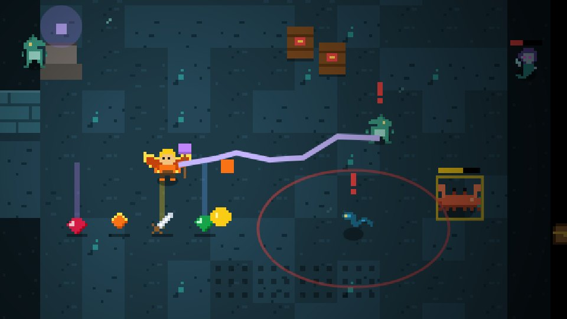
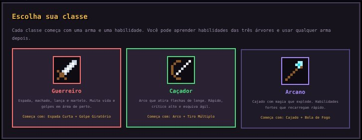
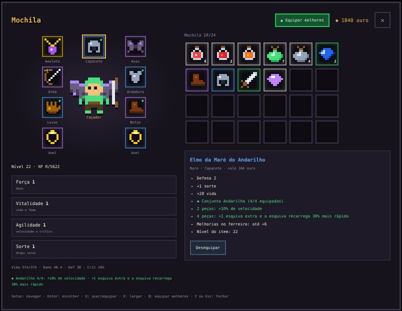
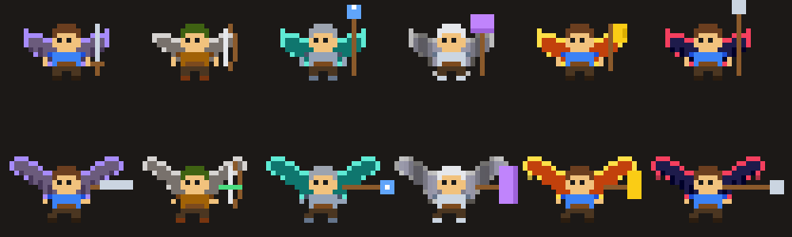
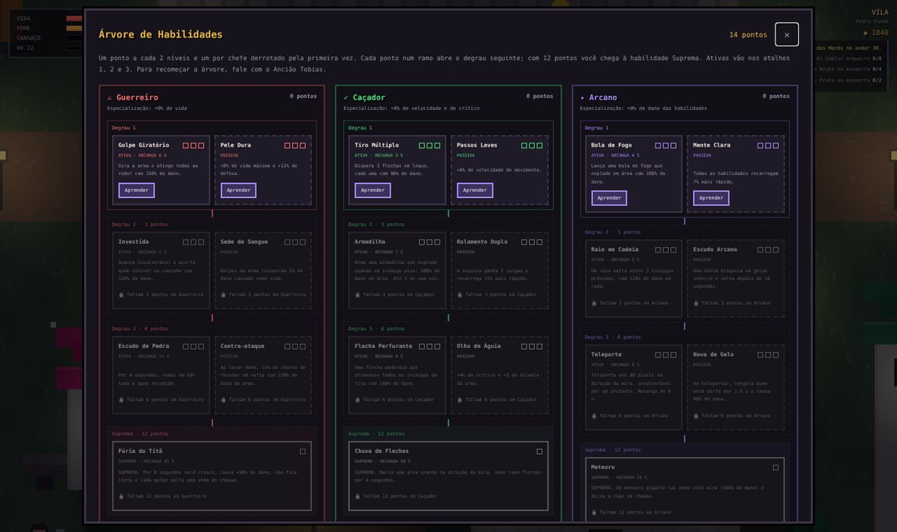
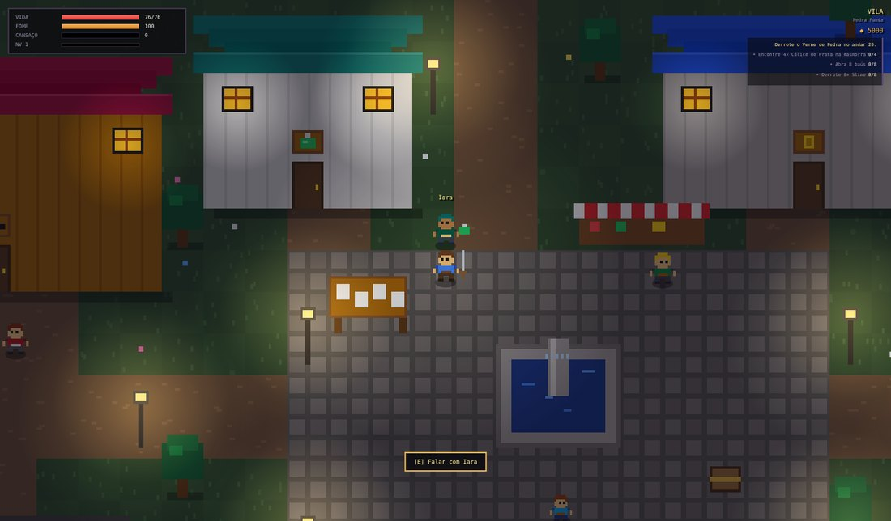
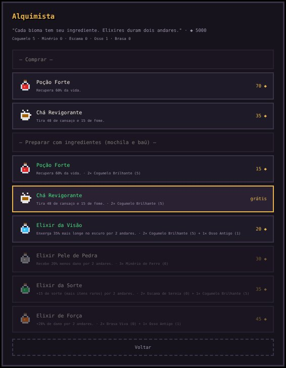
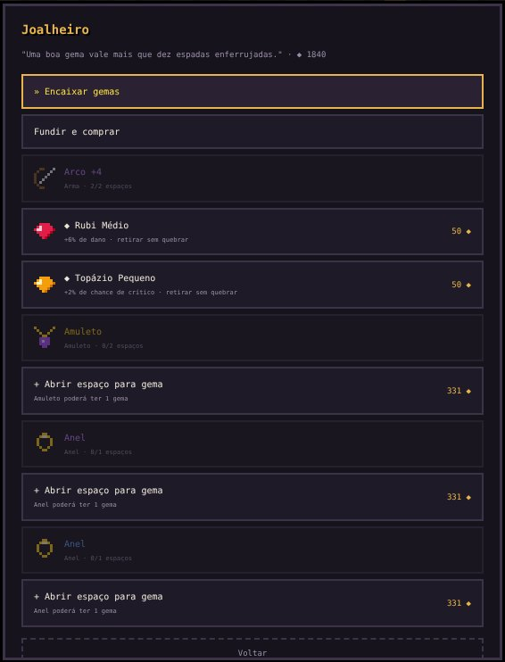

A Chama do Fundo, que aquece a vila de Pedra Funda, está se apagando. Desça 50 andares de masmorra, enfrente cinco chefes, junte tesouros e volte vivo para a vila. Este guia explica tudo o que o jogo tem, da primeira descida às Profundezas Infinitas.

Controles
| Ação | Teclado e mouse | Controle (Xbox ou PlayStation) | Celular |
|---|---|---|---|
| Mover | WASD ou setas | analógico esquerdo | analógico à esquerda |
| Atacar | J ou clique (mira no mouse) | A (analógico direito mira) | ⚔ |
| Esquivar ou voar | Espaço | B | » |
| Interagir (escada, fogueira, elevador, moradores) | E | X | E |
| Poção | Q | Y | ♥ |
| Comer | F | LT | — |
| Habilidades | 1, 2 e 3 | LB, RB e RT | botões roxos |
| Árvore de habilidades | H | clicar o analógico direito | ✦ |
| Mochila | I ou Tab | View | ▤ |
| Voltar à vila | R (Pergaminho ou Runa de Retorno) | clicar o analógico esquerdo | menu de pausa |
| Pausa | Esc | Menu | II |
| Música | M | menu de pausa | menu de pausa |
Com teclado, controle ou toque, flechas e magias miram sozinhas no inimigo mais perto à frente. Com o mouse, você mira onde clicar. O jogo salva sozinho no navegador.
Primeiros passos
- Escolha a classe. Ela define a arma e a habilidade iniciais (veja abaixo).
- Converse na vila. Marta, Joana, Bruno, Lia, o Ancião Tobias e Pedrinho explicam o básico. O "!" verde sobre um morador indica uma missão pronta para entregar.
- Desça pela torre. Do andar 2 em diante, a escada fica selada até você derrotar o Guardião da Chave, o inimigo com a chave sobre a cabeça, marcado no minimapa.
- Volte antes de morrer. Aperte R e fique parado 4 segundos (Runa de Retorno, grátis), ou leia um Pergaminho de Retorno para voltar na hora. Um portal fica aberto no andar onde você parou.
- Cuide da fome e do cansaço. Coma pão e descanse nas fogueiras da masmorra ou na estalagem da Marta.
Se morrer, você perde a mochila e metade do ouro, mas eles ficam numa lápide no andar. Volte lá para recuperar.
Classes e armas

| Classe | Começa com | Estilo |
|---|---|---|
| Guerreiro | Espada Curta + Golpe Giratório | de perto, muita vida e golpes em área |
| Caçador | Arco + Tiro Múltiplo | de longe, rápido e com crítico alto |
| Arcano | Cajado + Bola de Fogo | magia que explode e habilidades fortes |
A classe dá 1 ponto de habilidade extra e faz as armas dela caírem mais vezes. Mesmo assim, você pode usar qualquer arma e aprender habilidades das três árvores.
| Arma | Classe | Como ataca |
|---|---|---|
| Adaga | Guerreiro | muito rápida, alcance curto |
| Espada Curta | Guerreiro | equilibrada |
| Machado | Guerreiro | lenta e forte |
| Lança | Guerreiro | alcança mais longe |
| Martelo | Guerreiro | muito lenta, acerta em área e empurra |
| Arco | Caçador | atira flechas à distância |
| Cajado | Arcano | lança magia que explode e fere quem está perto |
Equipamento

O herói tem 9 espaços: arma, capacete, armadura, luvas, botas, amuleto, dois anéis e asas. Capacete, armadura, luvas e botas somam defesa e aparecem no desenho do herói.
Raridades: comum (branco), incomum (verde), raro (azul), épico (roxo) e lendário (dourado). Quanto mais rara a peça, mais bônus ela tem. Três lendários têm efeito próprio: Lâmina do Primeiro Fogo, Coração do Abismo e Égide do Rei Goblin.
Efeitos especiais aparecem em itens raros, épicos e lendários:
| Peça | Efeitos possíveis |
|---|---|
| Arma | Veneno, Gelo, Relâmpago, Explosão |
| Capacete | Visão (enxerga mais longe), Sabedoria (+20% de XP) |
| Armadura | Regeneração, Robusta (12% menos dano) |
| Luvas | Vampirismo (cura ao derrotar), Golpe Duplo |
| Botas | Ágil (esquiva recarrega mais rápido), Vento (+12% de velocidade) |
| Amuleto | Foco (recarga das habilidades), Arcano (+20% de dano das habilidades) |
| Anéis | Ganância (+35% de ouro), Sabedoria, Foco |
Amuletos raros ou melhores também podem dar +1 nível numa habilidade que você já aprendeu.
Escolher o que vestir: itens melhores que o seu ganham uma seta verde ▲ e um aviso ao serem pegos. Abra a mochila e equipe, ou use o botão Equipar melhores (tecla B). O equipar automático é opcional, em Opções de itens. Ele nunca troca a arma da sua classe, peças com efeito especial, itens com gemas nem peças de um conjunto ativo.
Ferreiro (Bruno): melhora arma, armadura, capacete, luvas e botas. Itens de andares mais fundos aguentam mais melhorias: +2 no começo, até +10 a partir do nível 40.
Conjuntos
Capacete, armadura, luvas e botas do mesmo conjunto dão um bônus com 2 peças e outro, mais forte, com as 4. Cada bioma tem o seu conjunto, e todo chefe deixa uma peça. As peças pintam o herói com a cor do conjunto.
| Conjunto | Onde cai | 2 peças | 4 peças |
|---|---|---|---|
| Andarilho | Cavernas Úmidas | +10% de velocidade | +1 esquiva e recarga 30% mais rápida |
| Mineiro de Ferro | Minas Abandonadas | +15% de defesa | 15% menos dano e imune a lentidão |
| Maré | Ruínas Submersas | +15% de vida | recupera 1,5% da vida por segundo |
| Sepulcro | Cripta Esquecida | +8% de crítico | cada inimigo derrotado adianta as habilidades em 0,6 s |
| Brasa | Coração do Abismo | +12% de dano | 15% de chance de o golpe explodir em fogo |
Asas

Cada chefe deixa as suas asas na primeira vitória, e às vezes nas seguintes. Com asas, a esquiva vira um voo por cima de inimigos, espinhos e lava.
| Asas | Chefe | Poder |
|---|---|---|
| Morcego | Rei Goblin (andar 10) | voo mais longo e rápido |
| Pedra | Verme de Pedra (20) | ao pousar, 50% menos dano por 2 s |
| Escama | Hidra das Marés (30) | voar recupera 3% da vida |
| Espectrais | Lich Ancestral (40) | o voo recarrega 40% mais rápido |
| Fogo | Senhor do Abismo (50) | rastro de fogo que queima os inimigos |
| Abissais | chefes depois do andar 50 | todos os poderes juntos |
| Chama | Chama Corrompida (100) | todos os poderes, e o voo cura 6% da vida |
Habilidades

Você ganha 1 ponto a cada 2 níveis, 1 por chefe derrotado pela primeira vez e 1 pela classe. Aperte H para abrir a árvore. Cada ramo tem 3 degraus e uma Suprema: o degrau 2 abre com 3 pontos no ramo, o 3 com 6 e a Suprema com 12. As ativas vão nos atalhos 1, 2 e 3.
| Ramo | Degrau | Ativa | Passiva |
|---|---|---|---|
| Guerreiro | 1 | Golpe Giratório | Pele Dura (vida e defesa) |
| Guerreiro | 2 | Investida | Sede de Sangue (roubo de vida) |
| Guerreiro | 3 | Escudo de Pedra | Contra-ataque |
| Guerreiro | Suprema | Fúria do Titã | |
| Caçador | 1 | Tiro Múltiplo | Passos Leves (velocidade) |
| Caçador | 2 | Armadilha | Rolamento Duplo (2 esquivas) |
| Caçador | 3 | Flecha Perfurante | Olho de Águia (crítico e alcance) |
| Caçador | Suprema | Chuva de Flechas | |
| Arcano | 1 | Bola de Fogo | Mente Clara (recarga) |
| Arcano | 2 | Raio em Cadeia | Escudo Arcano (bloqueia um golpe) |
| Arcano | 3 | Teleporte | Nova de Gelo (congela ao teleportar) |
| Arcano | Suprema | Meteoro |
Com 12 pontos num ramo você ganha o título de Mestre. O Ancião Tobias deixa esquecer todas as habilidades por ouro, para montar de novo.
Vila

| Lugar | Morador | Para que serve |
|---|---|---|
| Estalagem | Marta | dormir (tira cansaço e cura) e comer |
| Mercado | Joana | comprar poção, pão e pergaminho; vender tesouros e itens ("Vender tudo" guarda o que é valioso) |
| Ferreiro | Bruno | melhorar o equipamento |
| Alfaiate | Lia | aumentar a mochila (de 24 até 60 espaços) e o baú (de 40 até 100) |
| Casa do Ancião | Tobias | próximo objetivo, história e esquecer habilidades |
| Alquimista | Iara | poções fortes, chá e elixires (depois do 1º chefe) |
| Joalheiro | Otto | gemas (depois do 1º chefe) |
| Praça | Pedrinho | dicas da masmorra |
| Quadro de Missões | — | 3 pedidos com ouro, XP e item de recompensa |
| Baú | — | guarda itens com segurança, mesmo se você morrer: 40 espaços, até 100 com a Lia |
Baú e organização: no baú, a mochila e o baú aparecem lado a lado. Clique num item para ver e clique de novo para mudar de lado. Os botões rápidos guardam ingredientes e gemas, tesouros ou tudo de uma vez (poções, comida e pergaminhos ficam na mochila). Na mochila e no baú, as abas filtram por tipo (Equipamentos, Consumíveis, Ingredientes, Gemas, Tesouros e ▲ Melhores), e o botão Organizar ordena por tipo, raridade, valor, nível ou mais novos. Marque um item como favorito (★) com o botão ou a tecla F: ele fica no começo da lista, não é vendido no "Vender tudo" e não pode ser largado sem querer.
Elevadores a cada 5 andares deixam você descer direto para os andares que já alcançou.
Alquimista e joalheiro

Ingredientes caem dos inimigos (sempre dos de elite), e cada chefe deixa 3: Cogumelo Brilhante (Cavernas), Minério de Ferro (Minas), Escama de Sereia (Ruínas), Osso Antigo (Cripta) e Brasa Viva (Abismo). A Iara usa os ingredientes da mochila e do baú.
| Receita | Ingredientes | Efeito |
|---|---|---|
| Poção Forte | 2 cogumelos + 15 ouro (ou compre por 70) | cura 60% da vida |
| Chá Revigorante | 2 cogumelos (ou compre por 35) | tira 40 de cansaço e 15 de fome |
| Elixir da Visão | 2 cogumelos + 1 osso + 20 ouro | enxerga 35% mais longe por 2 andares |
| Elixir Pele de Pedra | 3 minérios + 30 ouro | 20% menos dano por 2 andares |
| Elixir da Sorte | 2 escamas + 1 cogumelo + 35 ouro | +15 de sorte por 2 andares |
| Elixir de Força | 2 brasas + 1 osso + 45 ouro | +20% de dano por 2 andares |
Elixir tomado na vila começa a contar no próximo andar. Se acabar a poção comum, a tecla Q usa a Poção Forte.

Gemas caem dos inimigos, mais dos de elite, e cada chefe deixa uma média. Ingredientes e gemas só começam a cair depois que a Iara e o Otto chegam à vila. Existem em 3 tamanhos:
| Gema | Bônus (pequena / média / grande) |
|---|---|
| Rubi | +3% / +6% / +10% de dano |
| Safira | +4% / +8% / +13% de defesa |
| Esmeralda | +4% / +8% / +13% de vida |
| Topázio | +2% / +4% / +6% de crítico |
| Ametista | habilidades recarregam 3% / 6% / 10% mais rápido |
O Otto abre espaços para gemas (até 2 na arma, 2 no amuleto e 1 em cada anel), encaixa por 20 ouro e retira sem quebrar por 50. Ele também funde 3 gemas iguais numa maior e vende gemas pequenas.
Masmorra
| Andares | Bioma | Inimigos |
|---|---|---|
| 1–10 | Cavernas Úmidas | Rato Gigante (bote), Morcego (mergulho), Slime (se divide), Goblin Arqueiro (rajada de 3 flechas) |
| 11–20 | Minas Abandonadas | Mineiro Esqueleto (levanta de novo), Aranha (teia que deixa lento), Golem de Pedra (pisão), Kobold Dinamiteiro |
| 21–30 | Ruínas Submersas | Homem-Peixe (bote com lança), Enguia Elétrica (choque), Caranguejo Blindado (casco), Sereia Sombria (orbes que perseguem) |
| 31–40 | Cripta Esquecida | Zumbi (deixa lento), Fantasma (atravessa paredes), Cavaleiro Amaldiçoado (investida), Necromante (levanta esqueletos) |
| 41–50 | Coração do Abismo | Diabrete (teleporta), Cão Infernal (rastro de fogo), Demônio (pisão com fogo), Elemental de Fogo (explode ao morrer) |
Todo golpe especial é avisado: o inimigo treme, pisca em vermelho e mostra um "!".
O que mais tem lá embaixo: - inimigos de elite (moldura dourada, sempre deixam item bom) e mímicos; - paredes rachadas que escondem salas secretas; - espinhos e barris explosivos, que explodem em cadeia e também ferem inimigos; - santuários com bênçãos para o andar (Força, Vigor, Fortuna e Rapidez), mercador errante e sala de desafio com baú especial; - um baú de recompensa quando você derrota todos os inimigos do andar.
Profundezas Infinitas: depois do andar 50, os biomas se repetem cada vez mais fortes, com 1 a 3 modificadores por andar (Horda, Elites, Escuridão, Velozes, Fúria, Blindados, Explosivos). Cada modificador dá +25% de recompensa.
Chefes
Cada chefe tem 2 fases: abaixo da metade da vida, ele fica mais agressivo.
| Andar | Chefe | Ataques | Dica |
|---|---|---|---|
| 10 | Rei Goblin | chuva de flechas e investida | fique andando em círculo e esquive para o lado quando ele se preparar para a investida |
| 20 | Verme de Pedra | mergulha e sai embaixo de você, derruba pedras do teto | quando ele sumir, continue se mexendo; ataque logo que ele sair do chão |
| 30 | Hidra das Marés | rajadas das três cabeças, muralhas de água com uma brecha | procure a brecha da muralha antes de ela chegar; arco e cajado ajudam a atacar de longe |
| 40 | Lich Ancestral | espiral de orbes, teleporte e esqueletos | derrube os esqueletos com habilidades de área e esquive pelos espaços da espiral |
| 50 | Senhor do Abismo | poças de lava e chuva de meteoros | não fique parado; Elixir Pele de Pedra e asas fazem muita diferença |
Na primeira vitória, cada chefe dá 1 ponto de habilidade, um capítulo da história e as suas asas. Em toda vitória ele deixa uma peça de conjunto e, depois que a Iara e o Otto chegam à vila, também ingredientes e uma gema média.
Profundezas Infinitas
Depois do andar 50, os chefes voltam corrompidos, com cores violeta, mais vida, um ataque novo e uma terceira fase quando ficam abaixo de um terço da vida.
| Andar | Chefe corrompido | Ataque novo |
|---|---|---|
| 60 | Rei Goblin Corrompido | chama goblins de elite |
| 70 | Verme de Pedra Corrompido | abre um círculo de poças de lava em volta de você |
| 80 | Hidra das Marés Corrompida | ganha uma quarta cabeça |
| 90 | Lich Ancestral Corrompido | espiral de orbes com quatro braços |
| 100 | Chama Corrompida | mistura os ataques de todos os chefes, em três fases |
Os chefes corrompidos deixam peças do conjunto lendário Guardião da Chama: - 2 peças: +10% de dano e +10% de vida; - 4 peças: ao levar um golpe fatal, você renasce com 40% da vida, uma vez por andar.
Na primeira vitória contra a Chama Corrompida você ganha as Asas da Chama (todos os poderes das asas, e o voo cura 6% da vida), o título Guardião da Chama e o epílogo da história. O menu da vila mostra seus recordes: o andar mais fundo e o tempo até os andares 50 e 100.
Dicas
- Leve sempre poções e pelo menos um Pergaminho de Retorno. A Runa é grátis, mas é interrompida se você levar dano.
- Troque de equipamento com frequência: itens de andares mais fundos são bem mais fortes, e os antigos aguentam poucas melhorias.
- Comece um conjunto pelo bioma onde você está: os chefes sempre deixam uma peça.
- Gaste os pontos de atributo (Força, Vitalidade, Agilidade e Sorte) a cada nível na mochila.
- Ingredientes e gemas não são vendidos no "Vender tudo". Guarde para a Iara e o Otto.
- Quebre paredes rachadas: as salas secretas costumam ter baús.
- Antes de um chefe, tome um elixir e encha a vida na fogueira.
Dar opinião
Na tela de título, no menu de pausa ou no menu da vila, escolha Dar opinião. Dê uma nota, marque o que gostou e o que foi difícil e escreva uma sugestão, se quiser. O jogo junta os dados da sua partida (classe, nível, andar mais fundo, chefes, onde você morreu e tempo de jogo). Aperte Copiar respostas e cole na mensagem para o professor.